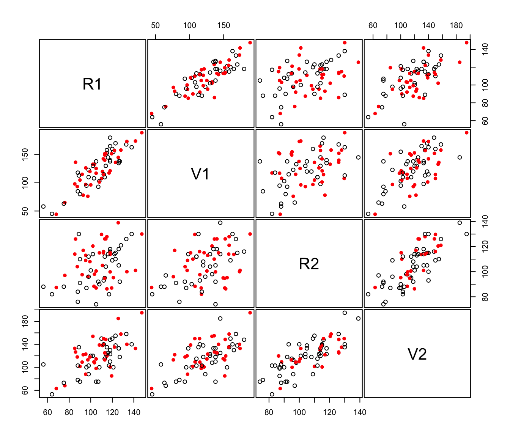

Pairwise Scatter Plots showing Missing Data Imputations
imputePairs.RdCreates a scatter plot for each pair of variables in given data, allowing display of imputations for missing values in different colors and symbols than non missing values.
Arguments
- data
A numeric vector, matrix, or data frame of observations containing missing values. Categorical variables are not allowed. If a matrix or data frame, rows correspond to observations and columns correspond to variables.
- dataImp
The dataset
datawith missing values imputed.- symbols
Either an integer or character vector assigning plotting symbols to the nonmissing data and impued values, respectively. The default is a closed circle for the nonmissing data and an open circle for the imputed values.
- colors
Either an integer or character vector assigning colors to the nonmissing data and impued values, respectively. The default is black for the nonmissing data and red for the imputed values.
- labels
As in function
pairs.- panel
As in function
pairs.- ...
As in function
pairs.- lower.panel
As in function
pairs.- upper.panel
As in function
pairs.- diag.panel
As in function
pairs.- text.panel
As in function
pairs.- label.pos
As in function
pairs.- cex.labels
As in function
pairs.- font.labels
As in function
pairs.- row1attop
As in function
pairs.- gap
As in function
pairs.
Examples
# \donttest{
# Note that package 'mix' must be installed
data(stlouis, package = "mix")
# impute the continuos variables in the stlouis data
stlimp <- imputeData(stlouis[,-(1:3)])
# plot imputed values
imputePairs(stlouis[,-(1:3)], stlimp)

# }